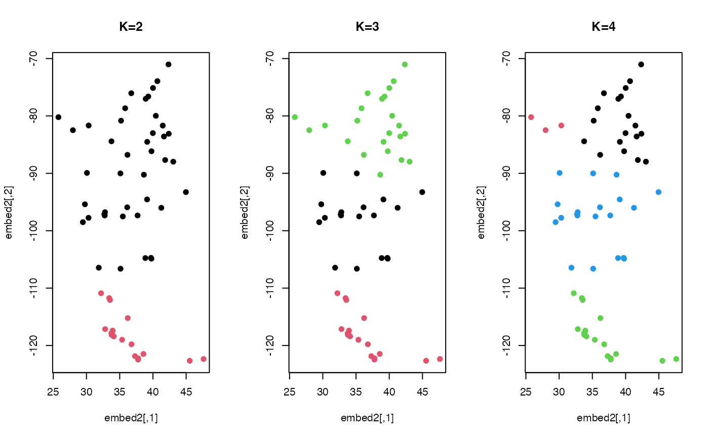

For \(n\) observations on a \((p-1)\) sphere in \(\mathbf{R}^p\), a finite mixture model is fitted whose components are spherical Laplace distributions via the following model $$f(x; \left\lbrace w_k, \mu_k, \sigma_k \right\rbrace_{k=1}^K) = \sum_{k=1}^K w_k SL(x; \mu_k, \sigma_k)$$ with parameters \(w_k\)'s for component weights, \(\mu_k\)'s for component locations, and \(\sigma_k\)'s for component scales.
Arguments
- data
data vectors in form of either an \((n\times p)\) matrix or a length-\(n\) list. See
wrap.spherefor descriptions on supported input types.- k
the number of clusters (default: 2).
- same.sigma
a logical;
TRUEto use same scale parameter across all components, orFALSEotherwise.- variants
type of the class assignment methods, one of
"soft","hard", and"stochastic".- ...
extra parameters including
- maxiter
the maximum number of iterations (default: 50).
- eps
stopping criterion for the EM algorithm (default: 1e-6).
- printer
a logical;
TRUEto show history of the algorithm,FALSEotherwise.
- object
a fitted
moSLmodel from themoSLfunction.- newdata
data vectors in form of either an \((m\times p)\) matrix or a length-\(m\) list. See
wrap.spherefor descriptions on supported input types.
Value
a named list of S3 class riemmix containing
- cluster
a length-\(n\) vector of class labels (from \(1:k\)).
- loglkd
log likelihood of the fitted model.
- criteria
a vector of information criteria.
- parameters
a list containing
proportion,location, andscale. See the section for more details.- membership
an \((n\times k)\) row-stochastic matrix of membership.
Parameters of the fitted model
A fitted model is characterized by three parameters. For \(k\)-mixture model on a \((p-1)\)
sphere in \(\mathbf{R}^p\), (1) proportion is a length-\(k\) vector of component weight
that sums to 1, (2) location is an \((k\times p)\) matrix whose rows are per-cluster locations, and
(3) concentration is a length-\(k\) vector of scale parameters for each component.
Note on S3 methods
There are three S3 methods; loglkd, label, and density. Given a random sample of
size \(m\) as newdata, (1) loglkd returns a scalar value of the computed log-likelihood,
(2) label returns a length-\(m\) vector of cluster assignments, and (3) density
evaluates densities of every observation according ot the model fit.
Examples
# \donttest{
# ---------------------------------------------------- #
# FITTING THE MODEL
# ---------------------------------------------------- #
# Load the 'city' data and wrap as 'riemobj'
data(cities)
locations = cities$cartesian
embed2 = array(0,c(60,2))
for (i in 1:60){
embed2[i,] = sphere.xyz2geo(locations[i,])
}
# Fit the model with different numbers of clusters
k2 = moSL(locations, k=2)
k3 = moSL(locations, k=3)
k4 = moSL(locations, k=4)
# Visualize
opar <- par(no.readonly=TRUE)
par(mfrow=c(1,3))
plot(embed2, col=k2$cluster, pch=19, main="K=2")
plot(embed2, col=k3$cluster, pch=19, main="K=3")
plot(embed2, col=k4$cluster, pch=19, main="K=4")

par(opar)
# ---------------------------------------------------- #
# USE S3 METHODS
# ---------------------------------------------------- #
# Use the same 'locations' data as new data
# (1) log-likelihood
newloglkd = round(loglkd(k3, locations), 5)
fitloglkd = round(k3$loglkd, 5)
print(paste0("Log-likelihood for K=3 fitted : ", fitloglkd))
#> [1] "Log-likelihood for K=3 fitted : 89.23077"
print(paste0("Log-likelihood for K=3 predicted : ", newloglkd))
#> [1] "Log-likelihood for K=3 predicted : 89.23077"
# (2) label
newlabel = label(k3, locations)
# (3) density
newdensity = density(k3, locations)
# }